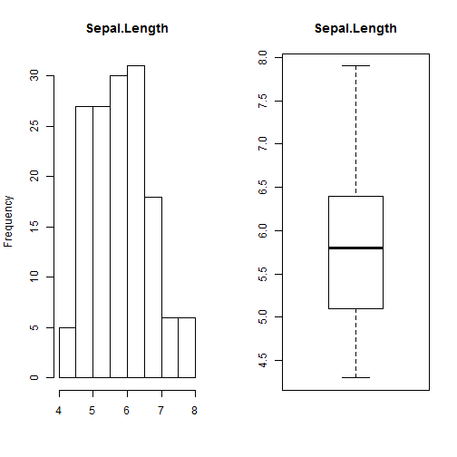

IrisApp
author: Jahaziel Ponce date: Saturday, 13 August 2014
First Slide
This presentation show the app shiny for data iris. Show panels:
- Plot
- Summary
- Table
Plot
This panel show histogram and boxplot or pie and barplot. Example:

Summary
This panel show summary of data of the variable selected. Example:
summary(iris$Sepal.Length)
Min. 1st Qu. Median Mean 3rd Qu. Max.
4.30 5.10 5.80 5.84 6.40 7.90
table
This panel show table of variable iris. Example:
head(iris$Sepal.Length)
[1] 5.1 4.9 4.7 4.6 5.0 5.4
link
App
Link app is: http://jahaziel.shinyapps.io/AppIris/
Link github app is: https://github.com/Jazielinho/Iris
Code Rstudio Presenter
Link Rstudio Presenter: https://github.com/Jazielinho/App-iris-Presentation